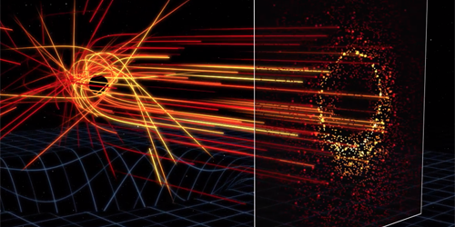
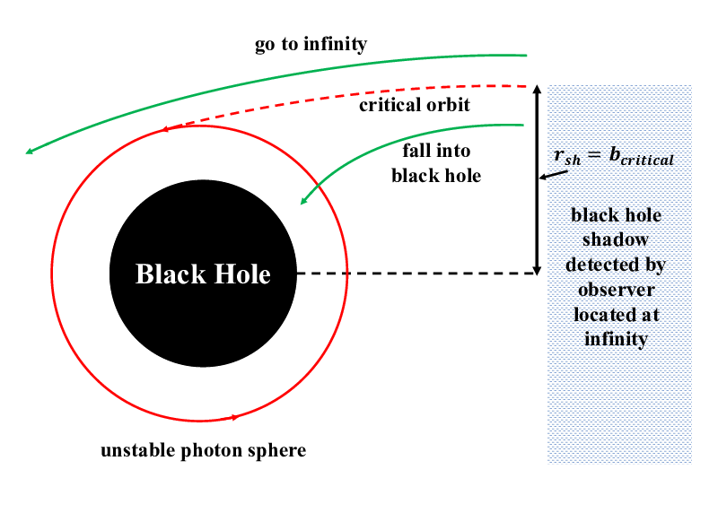
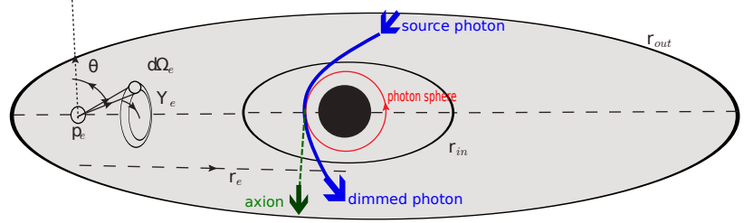

Thesis
Probing axion-like particles with black holes, galaxies, and gravitational waves
How the signal forms



What the thesis is actually about
ALPs and the Dimming of the Photon Ring
Near a black hole’s event horizon, intense magnetic fields can trigger photon–ALP oscillations, converting light into axions. This subtle transformation leads to a measurable dimming of the photon ring’s luminosity. With ultra-high resolution instruments like the Event Horizon Telescope, scientists can detect this dimming as a unique signature of ALPs, offering a potential window into new physics beyond the Standard Model.
eV-scale ALP Dark Matter from M87 Galaxy Spectra
Axion-like particles (ALPs) are compelling candidates for the dark matter (DM) of the Universe. At the eV mass scale, ALPs can decay into infrared, optical, and ultraviolet photons with lifetimes longer than the age of the Universe. We analyze multi-wavelength data from the central region of the Messier 87 (M87) galaxy, obtained with Swift, Astrosat, Kanata, Spitzer, and the International Ultraviolet Explorer, covering frequencies from ∼2×1014 Hz to 3×1015 Hz. These observations constrain narrow emission lines that would signal eV-scale ALP DM decay. Assuming ALPs form the DM in the M87 halo, we derive bounds on the ALP two-photon coupling (gaγγ) for masses in the range 2 eV ≲ ma ≲ 20 eV. Our results show that, in the range 8 eV ≲ ma ≲ 20 eV, the constraints improve upon existing limits by up to an order of magnitude.
Ultralight Dark Matter and the Nanohertz GW Spectrum
Supermassive black hole (SMBH) binary mergers are a dominant source of the stochastic gravitational wave background (SGWB) in the nanohertz band, now actively probed by pulsar timing arrays (PTAs). I investigated how ultralight dark matter (ULDM) with quartic self-interactions, forming solitonic cores around SMBHs, modifies the SGWB through dynamical friction on inspiralling binaries. By numerically solving the Gross–Pitaevskii–Poisson equations for halo masses Mhalo ∼ 1013M⊙, we compute self-consistent solitonic density profiles across a range of dimensionless self-coupling parameters λ̂, covering both attractive and repulsive cases. Our results show that soliton-induced dynamical friction imprints a suppression feature in the GW strain spectrum, with its frequency location and depth sensitive to both ULDM mass m and λ̂. For SMBH masses M• ∼ 108.5M⊙ and ULDM masses m ∼ (3×10−22 − 2×10−21) eV, current PTA observations (NANOGrav, EPTA, PPTA) may constrain ULDM self-coupling. Additionally, ULDM masses above ∼1.6×10−21 eV are excluded by soliton accretion-timescale limits. These findings highlight nanohertz GW spectra as a complementary probe of ULDM self-interactions, distinct from particle-scattering or rotation-curve analyses.
Graviton–Photon Conversion in M87
High-frequency gravitational waves (f ≳ 1010 Hz) offer a unique probe of physics beyond the Standard Model. We explore graviton-to-photon conversions via the inverse Gertsenshtein effect in the magnetic field of the M87 galaxy, using realistic models of its magnetic and plasma environment. By analyzing M87’s broadband spectrum from millimeter to TeV gamma rays, we search for hidden signatures of these conversions. In the range 1010–1027 Hz, the absence of excess emission allows us to place improved bounds on the GW strain amplitude hc and spectral energy density Ωgwh2, strengthening existing limits by up to five orders of magnitude compared to Milky Way-based constraints.